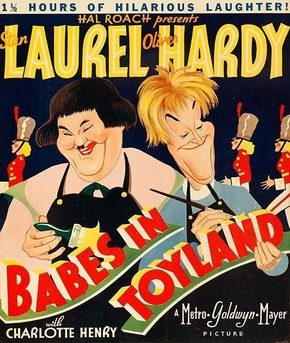

March of the Wooden Soldiers (Babes in Toyland)

Starring: Stan Laurel, Oliver Hardy, Billy Bletcher
Director: Gus Meins, Charley Rogers, Gordon Douglas
Writer: Stan Laurel, Nick Grinde, Frank Butler
Producer: Hal Roach
Babes in Toyland is a Laurel and Hardy musical Christmas film released on November 30, 1934. The film is also known by the alternative titles Laurel and Hardy in Toyland, Revenge Is Sweet (the 1948 European reissue title), and March of the Wooden Soldiers (in the United States), a 73-minute abridged version.
Trivia
- RKO Pictures originally purchased the rights in 1930 with the plans of filming the musical partly in two-strip Technicolor.
- Plans were announced to have Bebe Daniels (later Irene Dunne) star in the musical along with the comedy team of Wheeler and Woolsey.
- Due to the backlash against musicals in the autumn of 1930, the plans were dropped.
Filming Locations
- A couple of years later, some thought was given to filming the musical as an animated feature film to be shot in Technicolor by Walt Disney, however, the projected price of the film gave pause to RKO's plans.
- The village of Toyland was built on sound stages at Hal Roach Studios with the buildings painted in vivid storybook colors, leading Stan Laurel to regret that the film wasn't shot in Technicolor.
Previous Showings
2 Runs • 0 Festivals
All runs on record (2):
- December 20 - 25, 1992w/ The Wizard of Oz
- December 7 - 9, 2018w/ The Music Box, Busy Bodies, The Midnight Patrol